At a glance
Runners and drawer side sets are counted per side (left and right are separate lines).
| What | Quantity |
|---|---|
| Nova Pro runners 40 kg soft-close ≈ 1,485 pairs · 270–500 mm | 2,970 pcs |
| Scala drawer side sets H90 ≈ 1,409 pairs · H186 ≈ 850 pairs · 270–500 mm · colour ice | 4,519 pcs |
| Dynapro concealed runners 40 kg 3D ≈ 1,088 pairs · 250–500 mm · + 832 adapters / brackets | 2,176 pcs |
| Tiomos hinges with soft-close damper 1,796 · without 1,846 · + 9,596 mounting plates | 3,642 pcs |
| Front fixings & covers front fasteners 9,692 · cover sets 1,104 | 10,796 pcs |
| Camar brackets & Titus connectors Camar 807/817 1,685 · Titus 4,374 | 6,059 pcs |
Scala side sets run on Nova Pro runners; the lot contains runners for about 1,480 drawers.
Show:
★ GRASS Nova Pro / Scala drawer system 52 items · 18,392 pcs
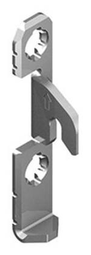
Representative photoFront fastener / front mount
Nova Pro front assembly fastener H90/H186
Front fixing for Nova Pro / Scala drawers (H90 / H186)
5,516 pcsRef #NPKIINN
Front fastener / front mount
Nova Pro front-end mount H186
Front fixing for Nova Pro / Scala drawers (H90 / H186)
3,916 pcsRef #NPKIINN2
Front fastener / front mount
Nova Pro NPTA fastener ICE, right-hand M01
Front fixing for Nova Pro / Scala drawers (H90 / H186)
130 pcsRef #NPTAKIINNO
Front fastener / front mount
Nova Pro NPTA fastener ICE left M01
Front fixing for Nova Pro / Scala drawers (H90 / H186)
130 pcsRef #NPTAFASTENER
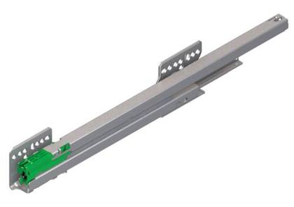
Product photoNova Pro runner 40 kg soft-close (per side)
Nova Pro sliding rail 40kg Soft-close 300 mm left- hand
408 pcsRef #NOVAPRO300L
Nova Pro runner 40 kg soft-close (per side)
Nova Pro sliding rail 40kg Soft-close 300 mm right- hand
408 pcsRef #NOVAPRO300R
Nova Pro runner 40 kg soft-close (per side)
Nova Pro sliding rail 40kg Soft-close 270 mm right- hand
373 pcsRef #NOVAPRO270R
Nova Pro runner 40 kg soft-close (per side)
Nova Pro slide rail 40kg Soft-close 270 mm left
353 pcsRef #NOVAPRO270L
Nova Pro runner 40 kg soft-close (per side)
Nova Pro sliding rail 40kg Soft-close 350 mm left- hand
314 pcsRef #NOVAPRO350L
Nova Pro runner 40 kg soft-close (per side)
Nova Pro sliding rail 40kg Soft-close 350 mm right- hand
314 pcsRef #NOVAPRO350R
Nova Pro runner 40 kg soft-close (per side)
Nova Pro slide rail 40kg Soft-close 400 mm left- hand
218 pcsRef #NOVAPRO400L
Nova Pro runner 40 kg soft-close (per side)
Nova Pro sliding rail 40kg Soft-close 400 mm right- hand
218 pcsRef #NOVAPRO400R
Nova Pro runner 40 kg soft-close (per side)
Nova Pro sliding rail 40kg Soft-close 450 mm left- hand
100 pcsRef #NOVAPRO450L
Nova Pro runner 40 kg soft-close (per side)
Nova Pro sliding rail 40kg Soft-close 450 mm right- hand
100 pcsRef #NOVAPRO450R
Nova Pro runner 40 kg soft-close (per side)
Nova Pro slide rail 40kg Soft-close 500 mm left
83 pcsRef #NOVAPRO500L
Nova Pro runner 40 kg soft-close (per side)
Nova Pro sliding rail 40kg Soft-close 500 mm right- hand
81 pcsRef #NOVAPRO500R
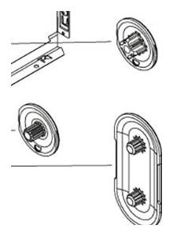
Representative photoScala cover set
NP Scala H186 cover set, ice
805 pcsRef #SCALA COVER 186 ICE
Scala cover set
NP Scala H90 cover set, ice
299 pcsRef #SCALAPEITE90ICE
Scala drawer accessory (end cap, connector, divider)
NP Scala box end H95 ice
34 pcsRef #LJLPICE
Scala drawer accessory (end cap, connector, divider)
NP Scala box connector, end cap H60 ice
32 pcsRef #LJSPICE
Scala drawer accessory (end cap, connector, divider)
NP Scala shelf divider H95 ice
30 pcsRef #LJLLICE
Scala drawer accessory (end cap, connector, divider)
NP Scala box joint profile 297x95x8 mm
1 pcsRef #LJLPROF40ICE
Scala drawer accessory (end cap, connector, divider)
NP Scala profile 347x95x8 mm
1 pcsRef #LJLPROF45ICE
Scala drawer accessory (end cap, connector, divider)
NP Scala profile 397x95x8 mm
1 pcsRef #LJLPROF50ICE
Scala drawer accessory (end cap, connector, divider)
NP Scala profile 697x95x8 mm
1 pcsRef #LJLPROF80ICE
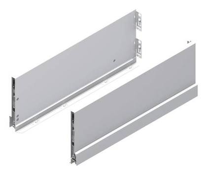
Product photoScala side set H186 (per side)
NP Scala side set H186 300 mm left ice
298 pcsRef #SCALA300L186ICE
Scala side set H186 (per side)
NP Scala side set H186 300 mm right ice
298 pcsRef #SCALA300R186ICE
Scala side set H186 (per side)
NP Scala side set H186 350 mm left-hand ice
195 pcsRef #SCALA350L186ICE
Scala side set H186 (per side)
NP Scala side set H186 350 mm right ice
195 pcsRef #SCALA350R186ICE
Scala side set H186 (per side)
NP Scala side set H186 450 mm left-hand ice
165 pcsRef #SCALA450L186ICE
Scala side set H186 (per side)
NP Scala side set H186 450 mm right ice
125 pcsRef #SCALA450R186ICE
Scala side set H186 (per side)
NP Scala side unit H186 270 mm left ice
104 pcsRef #SCALA270L186ICE
Scala side set H186 (per side)
NP Scala side set H186 270 mm right ice
104 pcsRef #SCALA270R186ICE
Scala side set H186 (per side)
NP Scala side set H186 400 mm left-hand ice
59 pcsRef #SCALA400L186ICE
Scala side set H186 (per side)
NP Scala side set H186 400 mm right ice
59 pcsRef #SCALA400R186ICE
Scala side set H186 (per side)
NP Scala side set H186 500 mm left-hand ice
49 pcsRef #SCALA500L186ICE
Scala side set H186 (per side)
NP Scala side set H186 500 mm right ice
49 pcsRef #SCALA500R186ICE
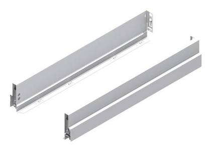
Product photoScala side set H90 (per side)
NP Scala side set H90 270 mm, left-hand
469 pcsRef #SCALA270L90ICE
Scala side set H90 (per side)
NP Scala side set H90 270 mm right-hand ice
469 pcsRef #SCALA270R90ICE
Scala side set H90 (per side)
NP Scala side set H90 350 mm left-hand ice
349 pcsRef #SCALA350L90ICE
Scala side set H90 (per side)
NP Scala side set H90 350 mm right-hand ice
349 pcsRef #SCALA350R90ICE
Scala side set H90 (per side)
NP Scala side set H90 300 mm left-hand ice
243 pcsRef #SCALA300L90ICE
Scala side set H90 (per side)
NP Scala side set H90 300 mm right-hand ice
243 pcsRef #SCALA300R90ICE
Scala side set H90 (per side)
NP Scala side set H90 450 mm left-hand ice
140 pcsRef #SCALA450L90ICE
Scala side set H90 (per side)
NP Scala side set H90 450 mm straight ice
139 pcsRef #SCALA450R90ICE
Scala side set H90 (per side)
NP Scala side set H90 400 mm left-hand ice
113 pcsRef #SCALA400L90ICE
Scala side set H90 (per side)
NP Scala side set H90 400 mm right-hand ice
113 pcsRef #SCALA400R90ICE
Scala side set H90 (per side)
NP Scala side set H90 500 mm left-hand ice
96 pcsRef #SCALA500L90ICE
Scala side set H90 (per side)
NP Scala side set H90 500 mm right-hand ice
96 pcsRef #SCALA500R90ICE
More items without photo (3)
| Ref | Item | Type | Status | Qty |
|---|---|---|---|---|
| Ref #PMNPP4830 | Nova Pro box base mat 380x280 mm | Drawer base mat | New – warehouse stock | 3 |
| Ref #PMNPP5830 | Nova Pro box base mat 480x280 mm | Drawer base mat | New – warehouse stock | 3 |
| Ref #PMNPPU5827 | Nova Pro Universal drawer base mat 480x250 mm | Drawer base mat | New – warehouse stock | 1 |
★ GRASS Dynapro concealed runners 45 items · 3,008 pcs
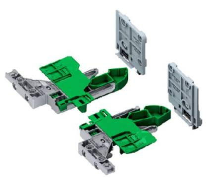
Representative photoDynapro adapter / front bracket
Dynapro adjustment adapter LEFT soft-close
250 pcsRef #GRF134125002233
Dynapro adapter / front bracket
Dynapro Adjustment adapter RIGHT soft-close
180 pcsRef #GRF134125003233
Dynapro adapter / front bracket
Dynapro front fixing bracket LEFT 3D
170 pcsRef #GRF134125000233
Dynapro adapter / front bracket
Dynapro front mounting bracket RIGHT 3D
70 pcsRef #GRF134125001233
Dynapro adapter / front bracket
Dynapro box side panel 35 342x133x12 mm
18 pcsRef #LOSSM35OM01
Dynapro adapter / front bracket
Dynapro box side panel 35 342x133x12 mm
16 pcsRef #LOSSM35VM01
Dynapro adapter / front bracket
Dynapro drawer back panel set 45 375x142x16 mm
14 pcsRef #LOTSL450
Dynapro adapter / front bracket
Dynapro drawer side 30 292x133x12 mm
12 pcsRef #LOSSM30VM01
Dynapro adapter / front bracket
Dynapro box rear set 45 375x85x16 mm
12 pcsRef #LOTSM450
Dynapro adapter / front bracket
Dynapro drawer side 30 292x173x12 mm
11 pcsRef #LOSSL30OM01
Dynapro adapter / front bracket
Dynapro drawer back panel set 50 425x142x16 mm
10 pcsRef #LOTSL500
Dynapro adapter / front bracket
Dynapro drawer side 30 292x133x12 mm
8 pcsRef #LOSSM30OM01
Dynapro adapter / front bracket
Dynapro drawer side 35 342x173x12 mm
7 pcsRef #LOSSL35OM01
Dynapro adapter / front bracket
Dynapro drawer base 5530 475x290x16 mm
6 pcsRef #LOKKP5530
Dynapro adapter / front bracket
Dynapro drawer side 30 292x173x12 mm
5 pcsRef #LOSSL30VM01
Dynapro adapter / front bracket
Dynapro box rear set 40 325x142x16 mm
5 pcsRef #LOTSL400
Dynapro adapter / front bracket
Dynapro box base 4530 375x290x16 mm
4 pcsRef #LOKKP4530
Dynapro adapter / front bracket
Dynapro box base 5030 425x290x16 mm
4 pcsRef #LOKKP5030
Dynapro adapter / front bracket
Dynapro drawer back panel set 55 475x142x16 mm
4 pcsRef #LOTSL550
Dynapro adapter / front bracket
Dynapro box base 4035 325x340x16 mm
3 pcsRef #LOKKP4035
Dynapro adapter / front bracket
Dynapro box, side 40, 392 x 133 x 12 mm
3 pcsRef #LOSSM40VM01
Dynapro adapter / front bracket
Dynapro box rear set 20 125x85x16 mm
3 pcsRef #LOTSM200
Dynapro adapter / front bracket
Dynapro box base 4030 325x290x16 mm
2 pcsRef #LOKKP4030
Dynapro adapter / front bracket
Dynapro box base 5035 425x340x16 mm
2 pcsRef #LOKKP5035
Dynapro adapter / front bracket
Dynapro drawer base 5535 475x340x16 mm
2 pcsRef #LOKKP5535
Dynapro adapter / front bracket
Dynapro drawer side 35 342x173x12 mm
2 pcsRef #LOSSL35VM01
Dynapro adapter / front bracket
Dynapro drawer side 40 392x133x12 mm
2 pcsRef #LOSSM40OM01
Dynapro adapter / front bracket
Dynapro box rear set 40 325x85x16 mm
2 pcsRef #LOTSM400
Dynapro adapter / front bracket
Dynapro drawer side 50 492x133x12 mm
1 pcsRef #LOSSM50OM01
Dynapro adapter / front bracket
Dynapro drawer side 50 492x133x12 mm
1 pcsRef #LOSSM50VM01
Dynapro adapter / front bracket
Dynapro box rear set 25 175x85x16 mm
1 pcsRef #LOTSM250
Dynapro adapter / front bracket
Dynapro box rear set 50 425x85x16 mm
1 pcsRef #LOTSM500
Dynapro adapter / front bracket
Dynapro drawer back set 55 475x85x16 mm
1 pcsRef #LOTSM550
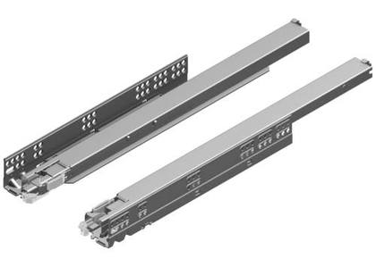
Product photoDynapro concealed runner 40 kg 3D soft-close (per side)
DYNAPRO FE NL250 40 3D slide rails 250 mm, left- hand
261 pcsRef #DYNAPRO250V
Dynapro concealed runner 40 kg 3D soft-close (per side)
DYNAPRO FE NL250 40 3D slide rails 250 mm, right- hand
252 pcsRef #DYNAPRO250O
Dynapro concealed runner 40 kg 3D soft-close (per side)
DYNAPRO FE NL350 40 3D slide rail 350 mm, right- hand
235 pcsRef #DYNAPRO350O
Dynapro concealed runner 40 kg 3D soft-close (per side)
DYNAPRO FE NL350 40 3D slide rail 350 mm, left- hand
235 pcsRef #DYNAPRO350V
Dynapro concealed runner 40 kg 3D soft-close (per side)
DYNAPRO FE NL450 40 3D slide rails 450 mm, right- hand
225 pcsRef #DYNAPRO450O
Dynapro concealed runner 40 kg 3D soft-close (per side)
DYNAPRO FE NL450 40 3D slide rails 450 mm, left- hand
225 pcsRef #DYNAPRO450V
Dynapro concealed runner 40 kg 3D soft-close (per side)
DYNAPRO FE NL400 40 3D slide rail 400 mm, right- hand
140 pcsRef #DYNAPRO400O
Dynapro concealed runner 40 kg 3D soft-close (per side)
DYNAPRO FE NL400 40 3D slide rail 400 mm, left- hand
140 pcsRef #DYNAPRO400V
Dynapro concealed runner 40 kg 3D soft-close (per side)
DYNAPRO FE NL500 40 3D slide rail 500 mm left
140 pcsRef #DYNAPRO500V
Dynapro concealed runner 40 kg 3D soft-close (per side)
DYNAPRO FE NL500 40 3D slide rail 500 mm, right- hand
131 pcsRef #DYNAPRO500O
Dynapro concealed runner 40 kg 3D soft-close (per side)
DYNAPRO FE NL300 40 3D slide rail 300 mm, right- hand
96 pcsRef #DYNAPRO300O
Dynapro concealed runner 40 kg 3D soft-close (per side)
DYNAPRO FE NL300 40 3D slide rail 300 mm, left- hand
96 pcsRef #DYNAPRO300V
★ GRASS Tiomos hinges & mounting plates 15 items · 13,240 pcs
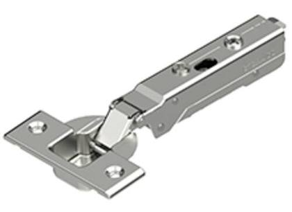
Representative photoTiomos hinge (without damper)
TIOMOS Impresso hinge 110 K3, non-silent
1,407 pcsRef #TIOSAR110K03P
Tiomos hinge (without damper)
TIOMOS Impresso hinge 110 K9.5, non-silent
184 pcsRef #TIOSAR110K95P
Tiomos hinge (without damper)
TIOMOS Mirro hinge 125 K14, non-silent
176 pcsRef #TIOSARPK125K14M
Tiomos hinge (without damper)
TIOMOS Impresso hinge 110/90E, non-dampened
79 pcsRef #TIOSAR11090EP
Tiomos hinge with integrated soft-close damper
TIOMOS Impresso hinge 110 K3 with damper
1,267 pcsRef #TIOSAR110K03PVAIM
Tiomos hinge with integrated soft-close damper
TIOMOS Impresso hinge 110 K9.5 with damper
170 pcsRef #TIOSAR110K95PVAIM
Tiomos hinge with integrated soft-close damper
TIOMOS Impresso hinge 110/90E with damping
82 pcsRef #TIOSAR11090EPVAIM
Tiomos hinge with integrated soft-close damper
TIOMOS Mirro hinge 125 K14 with damper
70 pcsRef #TIOSARPK125K14MVAIM
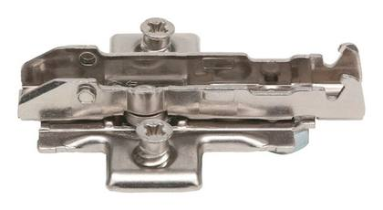
Representative photoTiomos mounting plate
TIOMOS Eco Cross washer H00
Hinge mounting plate (the inventory translation says "washer")
3,560 pcsRef #TIOALUSH00CROSSECO
Tiomos mounting plate
TIOMOS 1D Cross washer H03
Hinge mounting plate (the inventory translation says "washer")
2,394 pcsRef #TIOALUSH03CROSS
Tiomos mounting plate
TIOMOS 1D Linear washer H00
Hinge mounting plate (the inventory translation says "washer")
2,324 pcsRef #TIOALUSH00LINEAR
Tiomos mounting plate
TIOMOS Cross washer 20 degrees H02
Hinge mounting plate (the inventory translation says "washer")
1,155 pcsRef #TIOALUSH02CROSS20AST
Tiomos hinge with integrated soft-close damper
TIOMOS Screw-fixed hinge 155 K3 vaim
207 pcsRef #TIOSAR155K03RVAIM
Tiomos mounting plate
Eco Cross Mounting Plate Tiomos H 03, premium PH Euro, ni
Hinge mounting plate (the inventory translation says "washer")
163 pcsRef #MEALUSH03
More items without photo (1)
| Ref | Item | Type | Status | Qty |
|---|---|---|---|---|
| Ref #SAV04908 | GRASS TIOMOS 110 opening limiter 85 degrees | Hinge accessory (opening limiter) | Quarantine stock | 2 |
Camar cabinet hanging brackets & rails 6 items · 1,685 pcs
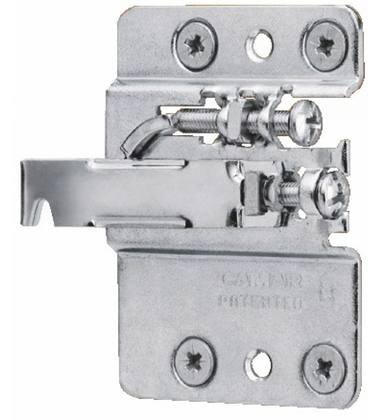
Product photoCabinet hanging bracket
Camar 807 cupboard bracket, right-hand
252 pcsRef #HE13912
Cabinet hanging bracket
Camar 807 cabinet bracket, left-hand
248 pcsRef #HE13913
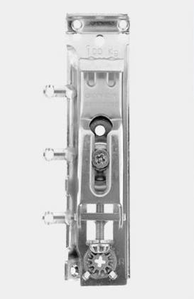
Product photoCabinet hanging bracket
Camar 817 cupboard bracket, right-hand
192 pcsRef #HE13920
Cabinet hanging bracket
Camar 817 cabinet bracket, left-hand
192 pcsRef #HE13921
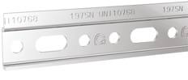
Product photoWall rail / wall plate for hanging brackets
Camar 817 wall bracket 875 26×60 mm
624 pcsRef #HE13922
Wall rail / wall plate for hanging brackets
Camar 807 wall bracket 897 60x70 mm
177 pcsRef #HE13914
Titus connectors 4 items · 4,374 pcs
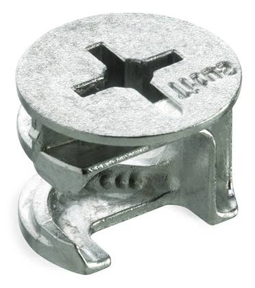
Representative photoCam connector (eccentric)
050420 Titus 5576 12 mm, zinc-plated, 14 mm shank
1,052 pcsRef #MINIHELA12
Cam connector (eccentric)
050412 Titus 5658 eccentric 15 mm zinc-plated.
1,044 pcsRef #MINIHELAK
Cam connector (eccentric)
050404 Titus 5654 eccentric 15 mm, zinc-plated
187 pcsRef #MINIHELA
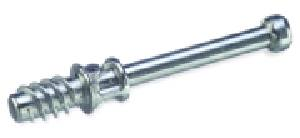
Representative photoConnector bolt / combi pin
050496 Titus combi 9435 pin 5x34
2,091 pcsRef #MINI BOLT
Drawer boxes, bases & back panels (16 mm board, cut to size) 219 items · 1,235 pcs
| Ref | Item | Type | Status | Qty |
|---|---|---|---|---|
| Ref #NPTL80M01 | Scala high-back box 80 709x185x16 mm M01 | Drawer back / rear panel (16 mm board) | New – warehouse stock | 29 |
| Ref #NPTU58M01 | Scala drawer back, universal 58, 169.5 x 84 x 16 mm, M01 | Drawer back / rear panel (16 mm board) | New – warehouse stock | 27 |
| Ref #NPTL50M01 | Scala box, rear, high 50, 409 x 185 x 16 mm, M01 | Drawer back / rear panel (16 mm board) | New – warehouse stock | 23 |
| Ref #NPTL58M01 | Scala high-back drawer unit 58 489x185x16 mm M01 | Drawer back / rear panel (16 mm board) | New – warehouse stock | 19 |
| Ref #NPTU40M01 | Scala box back panel, universal 40, 79.5 x 84 x 16 mm | Drawer back / rear panel (16 mm board) | New – warehouse stock | 17 |
| Ref #NPTL40M01 | Scala box back panel, high 40 309x185x16 mm M01 | Drawer back / rear panel (16 mm board) | New – warehouse stock | 16 |
| Ref #NPTU78M01 | Scala universal rear drawer 78 269.5 x 84 x 16 mm M01 | Drawer back / rear panel (16 mm board) | New – warehouse stock | 15 |
| Ref #NPTL78M01 | Scala drawer back, high 78 689x185x16 mm M01 | Drawer back / rear panel (16 mm board) | New – warehouse stock | 14 |
| Ref #NPTL48M01 | Scala high-back box 48 389x185x16 mm M01 | Drawer back / rear panel (16 mm board) | New – warehouse stock | 13 |
| Ref #NPTS55M01 | Scala low rear drawer 55 459x84x16 mm M01 | Drawer back / rear panel (16 mm board) | New – warehouse stock | 12 |
| Ref #NPTU48M01 | Scala box back, universal 48, 119.5 x 84 x 16 mm, M01 | Drawer back / rear panel (16 mm board) | New – warehouse stock | 12 |
| Ref #NPTA50M01 | Scala drawer rear tray 50 339x78x16 mm M01 | Drawer back / rear panel (16 mm board) | New – warehouse stock | 11 |
| Ref #NPTU100M01 | Scala box back, universal 100 379.5x84x16 mm M01 | Drawer back / rear panel (16 mm board) | New – warehouse stock | 11 |
| Ref #NPTU60M01 | Scala box back panel, universal 60, 179.5 x 84 x 16 mm, M01 | Drawer back / rear panel (16 mm board) | New – warehouse stock | 10 |
| Ref #NPTU70M01 | Scala rear box, universal 70, 229.5 x 84 x 16 mm, M01 | Drawer back / rear panel (16 mm board) | New – warehouse stock | 10 |
| Ref #NPTL55M01 | Scala high-back drawer unit 55 459x185x16 mm M01 | Drawer back / rear panel (16 mm board) | New – warehouse stock | 9 |
| Ref #NPTS100M01 | Scala box, rear, 100, 909 x 84 x 16 mm | Drawer back / rear panel (16 mm board) | New – warehouse stock | 9 |
| Ref #NPTA45M01 | Scala drawer rear tray 45 289x78x16 mm | Drawer back / rear panel (16 mm board) | New – warehouse stock | 8 |
| Ref #NPTL62M01 | Scala high-back box 62 529x185x16 mm M01 | Drawer back / rear panel (16 mm board) | New – warehouse stock | 8 |
| Ref #NPTL85M01 | Scala box back panel 85 759x185x16 mm | Drawer back / rear panel (16 mm board) | New – warehouse stock | 8 |
| Ref #NPTL90M01 | Scala high rear drawer 90 809x185x16 mm M01 | Drawer back / rear panel (16 mm board) | New – warehouse stock | 8 |
| Ref #NPTS110M01 | Scala box back panel 110 1009x84x16 mm | Drawer back / rear panel (16 mm board) | New – warehouse stock | 8 |
| Ref #NPTS120M01 | Scala drawer back panel 120 1109x84x16 mm | Drawer back / rear panel (16 mm board) | New – warehouse stock | 8 |
| Ref #NPTU45M01 | Scala box back panel, universal 45, 104.5 x 84 x 16 mm | Drawer back / rear panel (16 mm board) | New – warehouse stock | 8 |
| Ref #NPTU85M01 | Scala box back panel, universal 85, 304.5 x 84 x 16 mm | Drawer back / rear panel (16 mm board) | New – warehouse stock | 8 |
| Ref #NPTA120M01 | Scala drawer rear tray 120 1039x78x16 mm M01 | Drawer back / rear panel (16 mm board) | New – warehouse stock | 7 |
| Ref #NPTA80M01 | Scala drawer rear tray 80 639x78x16 mm M01 | Drawer back / rear panel (16 mm board) | New – warehouse stock | 7 |
| Ref #NPTL70M01 | Scala high-back box 70 609x185x16 mm M01 | Drawer back / rear panel (16 mm board) | New – warehouse stock | 7 |
| Ref #NPTS35M01 | Scala drawer back panel 35 259x84x16 mm | Drawer back / rear panel (16 mm board) | New – warehouse stock | 7 |
| Ref #NPTS45M01 | Scala low rear drawer 45 359x84x16 mm M01 | Drawer back / rear panel (16 mm board) | New – warehouse stock | 7 |
| Ref #NPTS60M01 | Scala drawer back panel 60 509x84x16 mm | Drawer back / rear panel (16 mm board) | New – warehouse stock | 7 |
| Ref #NPTU50M01 | Scala box back panel, universal 50, 129.5 x 84 x 16 mm | Drawer back / rear panel (16 mm board) | New – warehouse stock | 7 |
| Ref #NPTS20M01 | Scala drawer back, shallow 20 109x84x16 mm M01 | Drawer back / rear panel (16 mm board) | New – warehouse stock | 6 |
| Ref #NPTA55M01 | Scala drawer rear tray 55 389x78x16 mm M01 | Drawer back / rear panel (16 mm board) | New – warehouse stock | 6 |
| Ref #NPTS50M01 | Scala low rear drawer 50 409x84x16 mm M01 | Drawer back / rear panel (16 mm board) | New – warehouse stock | 6 |
| Ref #NPTA100M01 | Scala drawer rear tray 100 839x78x16 mm M01 | Drawer back / rear panel (16 mm board) | New – warehouse stock | 5 |
| Ref #NPTL110M01 | Scala box, rear, 110, 1009 x 185 x 16 mm | Drawer back / rear panel (16 mm board) | New – warehouse stock | 5 |
| Ref #NPTS85M01 | Scala drawer back panel 85 759x84x16 mm | Drawer back / rear panel (16 mm board) | New – warehouse stock | 5 |
| Ref #NPTS90M01 | Scala drawer back panel 90 809x84x16 mm | Drawer back / rear panel (16 mm board) | New – warehouse stock | 5 |
| Ref #NPTA70M01 | Scala drawer rear tray 70 539x78x16 mm M01 | Drawer back / rear panel (16 mm board) | New – warehouse stock | 4 |
| Ref #NPTA90M01 | Scala drawer rear tray 90 739x78x16 mm M01 | Drawer back / rear panel (16 mm board) | New – warehouse stock | 3 |
| Ref #NPTU65M01 | Scala box back, universal 65, 204.5 x 84 x 16 mm | Drawer back / rear panel (16 mm board) | New – warehouse stock | 3 |
| Ref #NPTL100M01 | Scala rear high drawer 100 909x185x16 mm M01 | Drawer back / rear panel (16 mm board) | New – warehouse stock | 3 |
| Ref #NPTL35M01 | Scala drawer back panel 35 259x185x16 mm | Drawer back / rear panel (16 mm board) | New – warehouse stock | 3 |
| Ref #NPTL45M01 | Scala high-back drawer unit 45 359x185x16 mm M01 | Drawer back / rear panel (16 mm board) | New – warehouse stock | 3 |
| Ref #NPTS30M01 | Scala drawer back panel 30 209x84x16 mm | Drawer back / rear panel (16 mm board) | New – warehouse stock | 3 |
| Ref #NPTS70M01 | Scala drawer back panel 70 609x84x16 mm | Drawer back / rear panel (16 mm board) | New – warehouse stock | 3 |
| Ref #NPTS25M01 | Scala low rear drawer 25 159x84x16 mm M01 | Drawer back / rear panel (16 mm board) | New – warehouse stock | 2 |
| Ref #NPTL120M01 | Scala high back panel for drawer 120 1109x185x16 mm M01 | Drawer back / rear panel (16 mm board) | New – warehouse stock | 2 |
| Ref #NPTL75M01 | Scala box, rear, 75, 659 x 185 x 16 mm | Drawer back / rear panel (16 mm board) | New – warehouse stock | 2 |
| Ref #NPTS75M01 | Scala drawer back panel 75 659x84x16 mm | Drawer back / rear panel (16 mm board) | New – warehouse stock | 2 |
| Ref #NPTU110M01 | Scala box back panel, universal 110, 429.5 x 84 x 16 mm | Drawer back / rear panel (16 mm board) | New – warehouse stock | 2 |
| Ref #NPTU75M01 | Scala box back panel, universal 75, 254.5 x 84 x 16 mm | Drawer back / rear panel (16 mm board) | New – warehouse stock | 2 |
| Ref #NPTA40M01 | Scala drawer back panel 40 239x78x16 mm M01 | Drawer back / rear panel (16 mm board) | New – warehouse stock | 1 |
| Ref #NPTA60M01 | Scala rear tray for drawer 60 439x78x16 mm M01 | Drawer back / rear panel (16 mm board) | New – warehouse stock | 1 |
| Ref #NPTL30M01 | Scala drawer back panel 30 209x185x16 mm | Drawer back / rear panel (16 mm board) | New – warehouse stock | 1 |
| Ref #NPTS40M01 | Scala drawer back, low 40 309x84x16 mm M01 | Drawer back / rear panel (16 mm board) | New – warehouse stock | 1 |
| Ref #NPTU55M01 | Scala box back panel, universal, 55, 154.5 x 84 x 16 mm | Drawer back / rear panel (16 mm board) | New – warehouse stock | 1 |
| Ref #NPP4530M01 | Scala drawer base 4530 359x281x16 mm M01 | Drawer base (16 mm board, cut to size) | New – warehouse stock | 20 |
| Ref #NPPU6030M01 | Scala drawer base, universal 6030, 509 x 281 x 16 mm, M01 | Drawer base (16 mm board, cut to size) | New – warehouse stock | 16 |
| Ref #NPP8035M01 | Scala drawer base 8035 709x331x16 mm M01 | Drawer base (16 mm board, cut to size) | New – warehouse stock | 15 |
| Ref #NPPU5830M01 | Scala drawer base, universal 5830, 489 x 281 x 16 mm, M01 | Drawer base (16 mm board, cut to size) | New – warehouse stock | 14 |
| Ref #NPP5035M01 | Scala drawer base 5035 409x331x16 mm M01 | Drawer base (16 mm board, cut to size) | New – warehouse stock | 12 |
| Ref #NPPU7827M01 | Scala drawer base, universal 7827, 689 x 251 x 16 mm | Drawer base (16 mm board, cut to size) | New – warehouse stock | 11 |
| Ref #NPP4027M01 | Scala drawer base 4027 309x251x16 mm M01 | Drawer base (16 mm board, cut to size) | New – warehouse stock | 11 |
| Ref #NPP7540M01 | Scala drawer base 7540 659x381x16 mm | Drawer base (16 mm board, cut to size) | New – warehouse stock | 11 |
| Ref #NPPU8030M01 | Scala drawer base, universal 8030, 709 x 281 x 16 mm, M01 | Drawer base (16 mm board, cut to size) | New – warehouse stock | 11 |
| Ref #NPP2050M01 | Scala drawer base 2050 109x481x16 mm M01 | Drawer base (16 mm board, cut to size) | New – warehouse stock | 10 |
| Ref #NPP11040M01 | Scala drawer base 11040 1009x381x16 mm | Drawer base (16 mm board, cut to size) | New – warehouse stock | 10 |
| Ref #NPP3035M01 | Scala drawer base 3035 209x331x16 mm | Drawer base (16 mm board, cut to size) | New – warehouse stock | 10 |
| Ref #NPP3527M01 | Scala drawer base 3527 259x251x16 mm | Drawer base (16 mm board, cut to size) | New – warehouse stock | 10 |
| Ref #NPP3540M01 | Scala drawer base 3540 259x381x16 mm | Drawer base (16 mm board, cut to size) | New – warehouse stock | 10 |
| Ref #NPP4035M01 | Scala drawer base 4035 309x331x16 mm M01 | Drawer base (16 mm board, cut to size) | New – warehouse stock | 10 |
| Ref #NPP5530M01 | Scala drawer base 5530 459x281x16 mm M01 | Drawer base (16 mm board, cut to size) | New – warehouse stock | 10 |
| Ref #NPP6040M01 | Scala drawer base 6040 509x381x16 mm M01 | Drawer base (16 mm board, cut to size) | New – warehouse stock | 10 |
| Ref #NPP6245M01 | Scala drawer base 6245 529x431x16 mm M01 | Drawer base (16 mm board, cut to size) | New – warehouse stock | 10 |
| Ref #NPP8030M01 | Scala drawer base 8030 709x281x16 mm M01 | Drawer base (16 mm board, cut to size) | New – warehouse stock | 10 |
| Ref #NPPU7830M01 | Scala drawer base, universal 7830, 689 x 281 x 16 mm, M01 | Drawer base (16 mm board, cut to size) | New – warehouse stock | 10 |
| Ref #NPP6035M01 | Scala drawer base 6035 509x331x16 mm M01 | Drawer base (16 mm board, cut to size) | New – warehouse stock | 9 |
| Ref #NPP8527M01 | Scala drawer base 8527 759 x 251 x 16 mm | Drawer base (16 mm board, cut to size) | New – warehouse stock | 9 |
| Ref #NPPU7040M01 | Scala drawer base, universal 7040, 609 x 381 x 16 mm, M01 | Drawer base (16 mm board, cut to size) | New – warehouse stock | 9 |
| Ref #NPP2550M01 | Scala drawer base 2550 159x481x16 mm M01 | Drawer base (16 mm board, cut to size) | New – warehouse stock | 8 |
| Ref #NPPU4827M01 | Scala drawer base, universal 4827 389x251x16 mm | Drawer base (16 mm board, cut to size) | New – warehouse stock | 8 |
| Ref #NPPU7027M01 | Scala drawer base, universal 7027, 609 x 251 x 16 mm, M01 | Drawer base (16 mm board, cut to size) | New – warehouse stock | 8 |
| Ref #NPP4550M01 | Scala drawer base 4550 359x481x16 mm | Drawer base (16 mm board, cut to size) | New – warehouse stock | 8 |
| Ref #NPP6045M01 | Scala drawer base 6045 509x431x16 mm M01 | Drawer base (16 mm board, cut to size) | New – warehouse stock | 8 |
| Ref #NPP7035M01 | Scala drawer base 7035 609x331x16 mm M01 | Drawer base (16 mm board, cut to size) | New – warehouse stock | 8 |
| Ref #NPP7830M01 | Scala drawer base 7830 689x281x16 mm M01 | Drawer base (16 mm board, cut to size) | New – warehouse stock | 8 |
| Ref #NPP8027M01 | Scala drawer base 8027 709x251x16 mm M01 | Drawer base (16 mm board, cut to size) | New – warehouse stock | 8 |
| Ref #NPPU5527M01 | Scala drawer base, universal 5527, 459 x 251 x 16 mm | Drawer base (16 mm board, cut to size) | New – warehouse stock | 8 |
| Ref #NPP10035M01 | Scala drawer base 10035 909x331x16 mm M01 | Drawer base (16 mm board, cut to size) | New – warehouse stock | 7 |
| Ref #NPP3535M01 | Scala drawer base 3535 259x331x16 mm | Drawer base (16 mm board, cut to size) | New – warehouse stock | 7 |
| Ref #NPP4535M01 | Scala drawer base 4535 359x331x16 mm M01 | Drawer base (16 mm board, cut to size) | New – warehouse stock | 7 |
| Ref #NPP7530M01 | Scala drawer base 7530 659x281x16 mm | Drawer base (16 mm board, cut to size) | New – warehouse stock | 7 |
| Ref #NPP8540M01 | Scala drawer base 8540 759x381x16 mm | Drawer base (16 mm board, cut to size) | New – warehouse stock | 7 |
| Ref #NPPU6035M01 | Scala drawer base, universal 6035, 509 x 331 x 16 mm, M01 | Drawer base (16 mm board, cut to size) | New – warehouse stock | 7 |
| Ref #NPPU7540M01 | Scala drawer base, universal 7540, 659 x 381 x 16 mm | Drawer base (16 mm board, cut to size) | New – warehouse stock | 7 |
| Ref #NPPU8040M01 | Scala drawer base, universal 8040, 709 x 381 x 16 mm, M01 | Drawer base (16 mm board, cut to size) | New – warehouse stock | 7 |
| Ref #NPPU9035M01 | Scala drawer base, universal 9035, 809 x 331 x 16 mm, M01 | Drawer base (16 mm board, cut to size) | New – warehouse stock | 7 |
| Ref #NPP2535M01 | Scala drawer base 2535 159x331x16 mm M01 | Drawer base (16 mm board, cut to size) | New – warehouse stock | 6 |
| Ref #NPP3030M01 | Scala drawer base 3030 209x281x16 mm | Drawer base (16 mm board, cut to size) | New – warehouse stock | 6 |
| Ref #NPP4527M01 | Scala drawer base 4527 359x251x16 mm | Drawer base (16 mm board, cut to size) | New – warehouse stock | 6 |
| Ref #NPP4545M01 | Scala drawer base 4545 359x431x16 mm | Drawer base (16 mm board, cut to size) | New – warehouse stock | 6 |
| Ref #NPP4830M01 | Scala drawer base 4830 389x281x16 mm M01 | Drawer base (16 mm board, cut to size) | New – warehouse stock | 6 |
| Ref #NPP5545M01 | Scala drawer base 5545 459x431x16 mm | Drawer base (16 mm board, cut to size) | New – warehouse stock | 6 |
| Ref #NPP6027M01 | Scala drawer base 6027 509x251x16 mm M01 | Drawer base (16 mm board, cut to size) | New – warehouse stock | 6 |
| Ref #NPP7050M01 | Scala drawer base 7050 609x481x16 mm | Drawer base (16 mm board, cut to size) | New – warehouse stock | 6 |
| Ref #NPP9035M01 | Scala drawer base 9035 809x331x16 mm M01 | Drawer base (16 mm board, cut to size) | New – warehouse stock | 6 |
| Ref #NPP9040M01 | Scala drawer base 9040 809 x 381 x 16 mm M01 | Drawer base (16 mm board, cut to size) | New – warehouse stock | 6 |
| Ref #NPPU7527M01 | Scala drawer base, universal 7527, 659 x 251 x 16 mm | Drawer base (16 mm board, cut to size) | New – warehouse stock | 5 |
| Ref #NPP4540M01 | Scala drawer base 4540 359x381x16 mm | Drawer base (16 mm board, cut to size) | New – warehouse stock | 5 |
| Ref #NPP7045M01 | Scala drawer base 7045 609x431x16 mm | Drawer base (16 mm board, cut to size) | New – warehouse stock | 5 |
| Ref #NPP8535M01 | Scala drawer base 8535 759x331x16 mm | Drawer base (16 mm board, cut to size) | New – warehouse stock | 5 |
| Ref #NPP9030M01 | Scala drawer base 9030 809 x 281 x 16 mm M01 | Drawer base (16 mm board, cut to size) | New – warehouse stock | 5 |
| Ref #NPPU11040M01 | Scala drawer base, universal 11040 1009x381x16 mm | Drawer base (16 mm board, cut to size) | New – warehouse stock | 5 |
| Ref #NPPU4527M01 | Scala drawer base, universal 4527, 359 x 251 x 16 mm | Drawer base (16 mm board, cut to size) | New – warehouse stock | 5 |
| Ref #NPPU6027M01 | Scala drawer base, universal 6027, 509 x 251 x 16 mm, M01 | Drawer base (16 mm board, cut to size) | New – warehouse stock | 5 |
| Ref #NPPU6040M01 | Scala drawer base, universal 6040, 509 x 381 x 16 mm, M01 | Drawer base (16 mm board, cut to size) | New – warehouse stock | 5 |
| Ref #NPP2035M01 | Scala drawer base 2035 109x331x16 mm M01 | Drawer base (16 mm board, cut to size) | New – warehouse stock | 4 |
| Ref #NPP2040M01 | Scala drawer base 2040 109x381x16 mm M01 | Drawer base (16 mm board, cut to size) | New – warehouse stock | 4 |
| Ref #NPPU8027M01 | Scala drawer base, universal 8027, 709 x 251 x 16 mm, M01 | Drawer base (16 mm board, cut to size) | New – warehouse stock | 4 |
| Ref #NPP10030M01 | Scala drawer base 10030 909x281x16 mm M01 | Drawer base (16 mm board, cut to size) | New – warehouse stock | 4 |
| Ref #NPP12030M01 | Scala drawer base 12030 1109x281x16 mm M01 | Drawer base (16 mm board, cut to size) | New – warehouse stock | 4 |
| Ref #NPP12040M01 | Scala drawer base 12040 1109x381x16 mm M01 | Drawer base (16 mm board, cut to size) | New – warehouse stock | 4 |
| Ref #NPP4040M01 | Scala drawer base 4040 309x381x16 mm M01 | Drawer base (16 mm board, cut to size) | New – warehouse stock | 4 |
| Ref #NPP4045M01 | Scala drawer base 4045 309x431x16 mm | Drawer base (16 mm board, cut to size) | New – warehouse stock | 4 |
| Ref #NPP6540M01 | Scala drawer base 6540 559x381x16 mm | Drawer base (16 mm board, cut to size) | New – warehouse stock | 4 |
| Ref #NPP7030M01 | Scala drawer base 7030 609 x 281 x 16 mm M01 | Drawer base (16 mm board, cut to size) | New – warehouse stock | 4 |
| Ref #NPP8050M01 | Scala drawer base 8050 709x481x16 mm M01 | Drawer base (16 mm board, cut to size) | New – warehouse stock | 4 |
| Ref #NPPU4027M01 | Scala drawer base, universal 4027, 309 x 251 x 16 mm | Drawer base (16 mm board, cut to size) | New – warehouse stock | 4 |
| Ref #NPPU6535M01 | Scala drawer base, universal 6535, 559 x 331 x 16 mm | Drawer base (16 mm board, cut to size) | New – warehouse stock | 4 |
| Ref #NPPU6540M01 | Scala drawer base, universal 6540, 559x381x16 mm | Drawer base (16 mm board, cut to size) | New – warehouse stock | 4 |
| Ref #NPPU7035M01 | Scala drawer base, universal 7035, 609 x 331 x 16 mm, M01 | Drawer base (16 mm board, cut to size) | New – warehouse stock | 4 |
| Ref #NPPU8035M01 | Scala drawer base, universal 8035, 709 x 331 x 16 mm, M01 | Drawer base (16 mm board, cut to size) | New – warehouse stock | 4 |
| Ref #NPPU6527M01 | Scala drawer base, universal 6527, 559x251x16 mm | Drawer base (16 mm board, cut to size) | New – warehouse stock | 3 |
| Ref #NPP10040M01 | Scala drawer base 10040 909x381x16 mm M01 | Drawer base (16 mm board, cut to size) | New – warehouse stock | 3 |
| Ref #NPP11030M01 | Scala drawer base 11030 1009x281x16 mm | Drawer base (16 mm board, cut to size) | New – warehouse stock | 3 |
| Ref #NPP12035M01 | Scala drawer base 12035 1109x331x16 mm M01 | Drawer base (16 mm board, cut to size) | New – warehouse stock | 3 |
| Ref #NPP4030M01 | Scala drawer base 4030 309x281x16 mm M01 | Drawer base (16 mm board, cut to size) | New – warehouse stock | 3 |
| Ref #NPP5027M01 | Scala drawer base 5027 409x251x16 mm M01 | Drawer base (16 mm board, cut to size) | New – warehouse stock | 3 |
| Ref #NPP5040M01 | Scala drawer base 5040 409x381x16 mm M01 | Drawer base (16 mm board, cut to size) | New – warehouse stock | 3 |
| Ref #NPP5535M01 | Scala drawer base 5535 459x331x16 mm M01 | Drawer base (16 mm board, cut to size) | New – warehouse stock | 3 |
| Ref #NPP5550M01 | Scala drawer base 5550 459x481x16 mm | Drawer base (16 mm board, cut to size) | New – warehouse stock | 3 |
| Ref #NPP6530M01 | Scala drawer base 6530 559x281x16 mm | Drawer base (16 mm board, cut to size) | New – warehouse stock | 3 |
| Ref #NPP7027M01 | Scala drawer base 7027 609x251x16 mm M01 | Drawer base (16 mm board, cut to size) | New – warehouse stock | 3 |
| Ref #NPP7535M01 | Scala drawer base 7535 659x331x16 mm | Drawer base (16 mm board, cut to size) | New – warehouse stock | 3 |
| Ref #NPP8040M01 | Scala drawer base 8040 709x381x16 mm M01 | Drawer base (16 mm board, cut to size) | New – warehouse stock | 3 |
| Ref #NPP8530M01 | Scala drawer base 8530 759x281x16 mm | Drawer base (16 mm board, cut to size) | New – warehouse stock | 3 |
| Ref #NPPU10040M01 | Scala drawer base, universal 10040, 909 x 381 x 16 mm, M01 | Drawer base (16 mm board, cut to size) | New – warehouse stock | 3 |
| Ref #NPPU11030M01 | Scala drawer base, universal 11030, 1009 x 281 x 16 mm | Drawer base (16 mm board, cut to size) | New – warehouse stock | 3 |
| Ref #NPPU4830M01 | Scala drawer base, universal 4830, 389 x 281 x 16 mm, M01 | Drawer base (16 mm board, cut to size) | New – warehouse stock | 3 |
| Ref #NPPU6530M01 | Scala drawer base, universal 6530, 559x281x16 mm | Drawer base (16 mm board, cut to size) | New – warehouse stock | 3 |
| Ref #NPPU9040M01 | Scala drawer base, universal 9040, 809 x 381 x 16 mm, M01 | Drawer base (16 mm board, cut to size) | New – warehouse stock | 3 |
| Ref #NPP2540M01 | Scala drawer base 2540 159x381x16 mm M01 | Drawer base (16 mm board, cut to size) | New – warehouse stock | 2 |
| Ref #NPPU9027M01 | Scala drawer base, universal 9027, 809 x 251 x 16 mm, M01 | Drawer base (16 mm board, cut to size) | New – warehouse stock | 2 |
| Ref #NPP3027M01 | Scala drawer base 3027 209 x 251 x 16 mm | Drawer base (16 mm board, cut to size) | New – warehouse stock | 2 |
| Ref #NPP3040M01 | Scala drawer base 3040 209x381x16 mm | Drawer base (16 mm board, cut to size) | New – warehouse stock | 2 |
| Ref #NPP3050M01 | Scala drawer base 3050 209x481x16 mm | Drawer base (16 mm board, cut to size) | New – warehouse stock | 2 |
| Ref #NPP4050M01 | Scala drawer base 4050 309x481x16 mm M01 | Drawer base (16 mm board, cut to size) | New – warehouse stock | 2 |
| Ref #NPP5050M01 | Scala drawer base 5050 409x481x16 mm M01 | Drawer base (16 mm board, cut to size) | New – warehouse stock | 2 |
| Ref #NPP5540M01 | Scala drawer base 5540 459x381x16 mm M01 | Drawer base (16 mm board, cut to size) | New – warehouse stock | 2 |
| Ref #NPP6050M01 | Scala drawer base 6050 509x481x16 mm M01 | Drawer base (16 mm board, cut to size) | New – warehouse stock | 2 |
| Ref #NPP6535M01 | Scala drawer base 6535 559x331x16 mm | Drawer base (16 mm board, cut to size) | New – warehouse stock | 2 |
| Ref #NPP7527M01 | Scala drawer base 7527 659x251x16 mm | Drawer base (16 mm board, cut to size) | New – warehouse stock | 2 |
| Ref #NPPU10030M01 | Scala drawer base, universal 10030, 909x281x16 mm, M01 | Drawer base (16 mm board, cut to size) | New – warehouse stock | 2 |
| Ref #NPPU12030M01 | Scala drawer base, universal 12030, 1109 x 281 x 16 mm, M01 | Drawer base (16 mm board, cut to size) | New – warehouse stock | 2 |
| Ref #NPPU12035M01 | Scala drawer base, universal 12035, 1109 x 331 x 16 mm, M01 | Drawer base (16 mm board, cut to size) | New – warehouse stock | 2 |
| Ref #NPPU12040M01 | Scala drawer base, universal 12040, 1109 x 381 x 16 mm, M01 | Drawer base (16 mm board, cut to size) | New – warehouse stock | 2 |
| Ref #NPPU7530M01 | Scala drawer base, universal 7530, 659 x 281 x 16 mm | Drawer base (16 mm board, cut to size) | New – warehouse stock | 2 |
| Ref #NPPU7535M01 | Scala drawer base, universal 7535, 659 x 331 x 16 mm | Drawer base (16 mm board, cut to size) | New – warehouse stock | 2 |
| Ref #NPP11035M01 | Scala drawer base 11035 1009x331x16 mm | Drawer base (16 mm board, cut to size) | New – warehouse stock | 1 |
| Ref #NPP3550M01 | Scala drawer base 3550 259x481x16 mm | Drawer base (16 mm board, cut to size) | New – warehouse stock | 1 |
| Ref #NPP5030M01 | Scala drawer base 5030 409x281x16 mm M01 | Drawer base (16 mm board, cut to size) | New – warehouse stock | 1 |
| Ref #NPP5527M01 | Scala drawer base 5527 459x251x16 mm M01 | Drawer base (16 mm board, cut to size) | New – warehouse stock | 1 |
| Ref #NPP6030M01 | Scala drawer base 6030 509x281x16 mm M01 | Drawer base (16 mm board, cut to size) | New – warehouse stock | 1 |
| Ref #NPP7040M01 | Scala drawer base 7040 609x381x16 mm M01 | Drawer base (16 mm board, cut to size) | New – warehouse stock | 1 |
| Ref #NPP9027M01 | Scala drawer base 9027 809 x 251 x 16 mm M01 | Drawer base (16 mm board, cut to size) | New – warehouse stock | 1 |
| Ref #NPPU10035M01 | Scala drawer base, universal 10035 909x331x16 mm M01 | Drawer base (16 mm board, cut to size) | New – warehouse stock | 1 |
| Ref #NPPU11035M01 | Scala drawer base, universal 11035 1009x331x16 mm | Drawer base (16 mm board, cut to size) | New – warehouse stock | 1 |
| Ref #NPPU5027M01 | Scala drawer base, universal 5027, 409 x 251 x 16 mm | Drawer base (16 mm board, cut to size) | New – warehouse stock | 1 |
| Ref #NPPU7030M01 | Scala drawer base, universal 7030, 609 x 281 x 16 mm, M01 | Drawer base (16 mm board, cut to size) | New – warehouse stock | 1 |
| Ref #NPPU8535M01 | Scala drawer base, universal 8535, 759 x 331 x 16 mm | Drawer base (16 mm board, cut to size) | New – warehouse stock | 1 |
| Ref #NPPU8540M01 | Scala drawer base, universal 8540, 759 x 381 x 16 mm | Drawer base (16 mm board, cut to size) | New – warehouse stock | 1 |
| Ref #LTK6030LSC | Scala box 6030, tall, 558x297x185 mm Contents of the box kit (sides / base / back) to be confirmed on viewing | Scala drawer box kit (ready size) | New – warehouse stock | 26 |
| Ref #LTK6030ASC | Scala box 6030 sink 558x297x185 mm Contents of the box kit (sides / base / back) to be confirmed on viewing | Scala drawer box kit (ready size) | New – warehouse stock | 23 |
| Ref #LTK5830LSC | Scala box 5830, tall, 538 x 297 x 185 mm Contents of the box kit (sides / base / back) to be confirmed on viewing | Scala drawer box kit (ready size) | New – warehouse stock | 9 |
| Ref #LTK5830USC | Scala box 5830 universal 538x297x85 mm Contents of the box kit (sides / base / back) to be confirmed on viewing | Scala drawer box kit (ready size) | New – warehouse stock | 9 |
| Ref #LTK4040LSC | Scala box 4040, tall, 358x397x185 mm Contents of the box kit (sides / base / back) to be confirmed on viewing | Scala drawer box kit (ready size) | New – warehouse stock | 6 |
| Ref #LTK4830LSC | Scala box 4830, tall, 438x297x185 mm Contents of the box kit (sides / base / back) to be confirmed on viewing | Scala drawer box kit (ready size) | New – warehouse stock | 6 |
| Ref #LTK7030LSC | Scala ltk 7030 tall 658x297x185 mm Contents of the box kit (sides / base / back) to be confirmed on viewing | Scala drawer box kit (ready size) | New – warehouse stock | 3 |
| Ref #LTK12035ASC | Scala box 12035 sink 1158x347x185 mm Contents of the box kit (sides / base / back) to be confirmed on viewing | Scala drawer box kit (ready size) | New – warehouse stock | 2 |
| Ref #LTK12035LSC | Scala box 12035, tall, 1158x347x185 mm Contents of the box kit (sides / base / back) to be confirmed on viewing | Scala drawer box kit (ready size) | New – warehouse stock | 2 |
| Ref #LTK5027LSC | Scala box 5027, tall, 458 x 267 x 185 mm Contents of the box kit (sides / base / back) to be confirmed on viewing | Scala drawer box kit (ready size) | New – warehouse stock | 2 |
| Ref #LTK5027USC | Scala box, universal 5027, internal dimensions 409x251x70 mm Contents of the box kit (sides / base / back) to be confirmed on viewing | Scala drawer box kit (ready size) | New – warehouse stock | 2 |
| Ref #LTK5030SSC | Scala box 5030, low profile, 458 x 297 x 85 mm Contents of the box kit (sides / base / back) to be confirmed on viewing | Scala drawer box kit (ready size) | New – warehouse stock | 2 |
| Ref #LTK6030USC | Scala ltk 6030 universal 558x297x85 mm Contents of the box kit (sides / base / back) to be confirmed on viewing | Scala drawer box kit (ready size) | New – warehouse stock | 2 |
| Ref #LTK6035USC | Scala box 6035 universal 558x347x85 mm Contents of the box kit (sides / base / back) to be confirmed on viewing | Scala drawer box kit (ready size) | New – warehouse stock | 2 |
| Ref #LTK5827USC | Scala box, universal 5827, internal dimensions 489x251x70 mm Contents of the box kit (sides / base / back) to be confirmed on viewing | Scala drawer box kit (ready size) | New – warehouse stock | 2 |
| Ref #LTK10035USC | Scala box 10035 universal 958x347x85 mm Contents of the box kit (sides / base / back) to be confirmed on viewing | Scala drawer box kit (ready size) | New – warehouse stock | 1 |
| Ref #LTK4027ASC | Scala box 4027 basin 358x267x185 mm Contents of the box kit (sides / base / back) to be confirmed on viewing | Scala drawer box kit (ready size) | New – warehouse stock | 1 |
| Ref #LTK4027LSC | Scala ltk 4027 tall 358x267x185 mm Contents of the box kit (sides / base / back) to be confirmed on viewing | Scala drawer box kit (ready size) | New – warehouse stock | 1 |
| Ref #LTK4027USC | Scala box, universal 4027, internal dimensions 309x251x70 mm Contents of the box kit (sides / base / back) to be confirmed on viewing | Scala drawer box kit (ready size) | New – warehouse stock | 1 |
| Ref #LTK4530LSC | Scala box 4530, tall, 408 x 297 x 185 mm Contents of the box kit (sides / base / back) to be confirmed on viewing | Scala drawer box kit (ready size) | New – warehouse stock | 1 |
| Ref #LTK4827USC | Scala box, universal 4827, internal dimensions 389x251x70 mm Contents of the box kit (sides / base / back) to be confirmed on viewing | Scala drawer box kit (ready size) | New – warehouse stock | 1 |
| Ref #LTK5530ASC | Scala box 5530 sink 508x297x185 mm Contents of the box kit (sides / base / back) to be confirmed on viewing | Scala drawer box kit (ready size) | New – warehouse stock | 1 |
| Ref #LTK5530LSC | Scala ltk 5530 tall 508x297x185 mm Contents of the box kit (sides / base / back) to be confirmed on viewing | Scala drawer box kit (ready size) | New – warehouse stock | 1 |
| Ref #LTK6027LSC | Scala box 6027, tall, 558 x 267 x 185 mm Contents of the box kit (sides / base / back) to be confirmed on viewing | Scala drawer box kit (ready size) | New – warehouse stock | 1 |
| Ref #LTK6035LSC | Scala box 6035, tall, 558 x 347 x 185 mm Contents of the box kit (sides / base / back) to be confirmed on viewing | Scala drawer box kit (ready size) | New – warehouse stock | 1 |
| Ref #LTK6050SSC | Scala box 6050, internal dimensions 509x481x70 mm Contents of the box kit (sides / base / back) to be confirmed on viewing | Scala drawer box kit (ready size) | New – warehouse stock | 1 |
| Ref #LTK7030ASC | Scala box 7030, basin 658x297x185 mm Contents of the box kit (sides / base / back) to be confirmed on viewing | Scala drawer box kit (ready size) | New – warehouse stock | 1 |
| Ref #LTK7030SSC | Scala box 7030, internal dimensions 609x281x70 mm Contents of the box kit (sides / base / back) to be confirmed on viewing | Scala drawer box kit (ready size) | New – warehouse stock | 1 |
| Ref #LTK7035LSC | Scala box 7035, tall, 658 x 347 x 185 mm Contents of the box kit (sides / base / back) to be confirmed on viewing | Scala drawer box kit (ready size) | New – warehouse stock | 1 |
| Ref #LTK8040LSC | Scala box 8040, tall, 758x397x185 mm Contents of the box kit (sides / base / back) to be confirmed on viewing | Scala drawer box kit (ready size) | New – warehouse stock | 1 |
| Ref #LTK8040USC | Scala box 8040 universal 758x397x85 mm Contents of the box kit (sides / base / back) to be confirmed on viewing | Scala drawer box kit (ready size) | New – warehouse stock | 1 |
| Ref #LTK9027LSC | Scala box 9027, tall, 858 x 267 x 185 mm Contents of the box kit (sides / base / back) to be confirmed on viewing | Scala drawer box kit (ready size) | New – warehouse stock | 1 |
| Ref #LTK9027USC | Scala box 9027 universal 858x267x85 mm Contents of the box kit (sides / base / back) to be confirmed on viewing | Scala drawer box kit (ready size) | New – warehouse stock | 1 |
| Ref #LTK9030ASC | Scala box 9030 sink 858x297x185 mm Contents of the box kit (sides / base / back) to be confirmed on viewing | Scala drawer box kit (ready size) | New – warehouse stock | 1 |
| Ref #LTK9030LSC | Scala ltk 9030 tall 858x297x185 mm Contents of the box kit (sides / base / back) to be confirmed on viewing | Scala drawer box kit (ready size) | New – warehouse stock | 1 |
| Ref #LTK6245LSC | Scala box 6245, tall, 578 x 447 x 185 mm Contents of the box kit (sides / base / back) to be confirmed on viewing | Scala drawer box kit (ready size) | New – warehouse stock | 1 |
Summary of contents
By stock status
| Status | Items | Quantity (pcs) | Share |
|---|---|---|---|
| New – warehouse stock Regular warehouse stock, new and unused | 338 | 41,562 | 99.1% |
| Quarantine stock Booked in a separate quarantine location – condition to be checked | 3 | 372 | 0.9% |
| Total | 341 | 41,934 | 100% |
By product type
| Product type | Items | Quantity (pcs) | Share |
|---|---|---|---|
| Front fastener / front mount | 4 | 9,692 | 23.1% |
| Tiomos mounting plate | 5 | 9,596 | 22.9% |
| Nova Pro runner 40 kg soft-close (per side) | 12 | 2,970 | 7.1% |
| Scala side set H90 (per side) | 12 | 2,819 | 6.7% |
| Cam connector (eccentric) | 3 | 2,283 | 5.4% |
| Dynapro concealed runner 40 kg 3D soft-close (per side) | 12 | 2,176 | 5.2% |
| Connector bolt / combi pin | 1 | 2,091 | 5.0% |
| Tiomos hinge (without damper) | 4 | 1,846 | 4.4% |
| Tiomos hinge with integrated soft-close damper | 5 | 1,796 | 4.3% |
| Scala side set H186 (per side) | 12 | 1,700 | 4.1% |
| Scala cover set | 2 | 1,104 | 2.6% |
| Cabinet hanging bracket | 4 | 884 | 2.1% |
| Dynapro adapter / front bracket | 33 | 832 | 2.0% |
| Wall rail / wall plate for hanging brackets | 2 | 801 | 1.9% |
| Drawer base (16 mm board, cut to size) | 125 | 666 | 1.6% |
| Drawer back / rear panel (16 mm board) | 58 | 450 | 1.1% |
| Scala drawer box kit (ready size) | 36 | 119 | 0.3% |
| Scala drawer accessory (end cap, connector, divider) | 7 | 100 | 0.2% |
| Drawer base mat | 3 | 7 | 0.0% |
| Hinge accessory (opening limiter) | 1 | 2 | 0.0% |
| Total | 341 | 41,934 | 100% |
By categorie
| Categorie | Items | Quantity (pcs) | Share |
|---|---|---|---|
| ★ GRASS Nova Pro / Scala drawer system | 52 | 18,392 | 43.9% |
| ★ GRASS Dynapro concealed runners | 45 | 3,008 | 7.2% |
| ★ GRASS Tiomos hinges & mounting plates | 15 | 13,240 | 31.6% |
| Camar cabinet hanging brackets & rails | 6 | 1,685 | 4.0% |
| Titus connectors | 4 | 4,374 | 10.4% |
| Drawer boxes, bases & back panels (16 mm board, cut to size) | 219 | 1,235 | 2.9% |
| Total | 341 | 41,934 | 100% |
Shipping estimate
| Total volume (approx.) | ≈ 22–34 m³ |
| Total weight (approx.) | ≈ 7–11 t |
| 40′ High Cube containers | 1 |
| 20′ Standard containers | 1–2 |
Estimate from typical piece weights of the hardware (in cartons) and the board dimensions. Final loading plan confirmed after viewing.
Container capacity used: 40′ HC ≈ 68 m³ / 26.5 t, 20′ ≈ 28 m³ / 24 t (practical loading).
Container capacity used: 40′ HC ≈ 68 m³ / 26.5 t, 20′ ≈ 28 m³ / 24 t (practical loading).